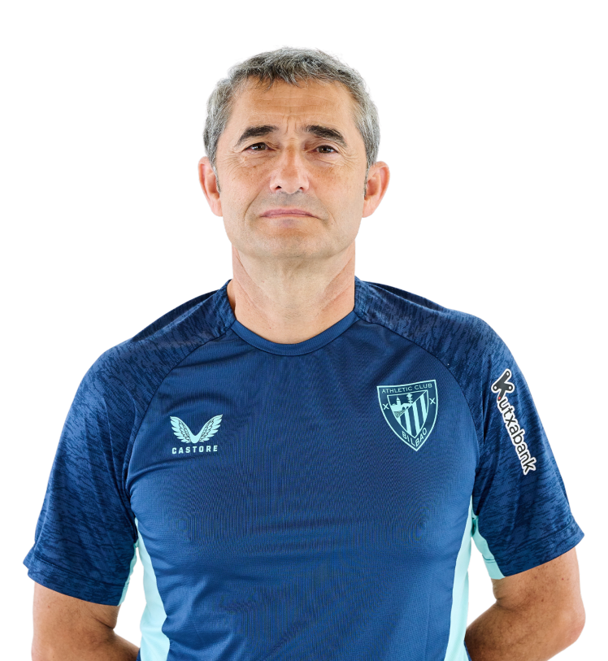
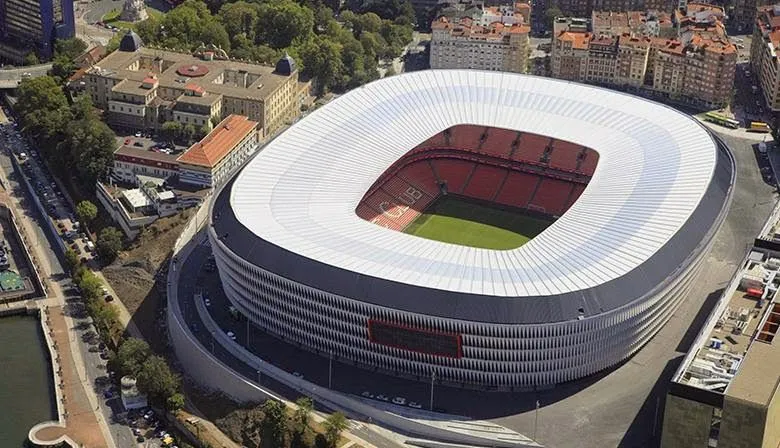

Treinador: Ernesto Valverde
Ernesto Valverde é um treinador espanhol nascido em Viandar de la Vera, reconhecido pela sua serenidade, experiência e profundo conhecimento da LaLiga. Destacou-se em várias passagens de sucesso pelo Athletic Club e na conquista de títulos pelo Barcelona antes de regressar a Bilbau para consolidar o seu legado nos "Leones".

Estádio: San Mamés
O Estádio de San Mamés, conhecido como "La Catedral", é a casa do Athletic Bilbão e tem capacidade para cerca de 53.000 espectadores. É famoso pela sua atmosfera apaixonante e pela forte ligação entre clube e adeptos em Bilbau.

Estilo de Jogo:
O estilo de jogo de Ernesto Valverde no Athletic Bilbão é definido pelo equilíbrio tático e pela verticalidade, unindo a garra tradicional basca a uma organização moderna.
"Unique In The World!"